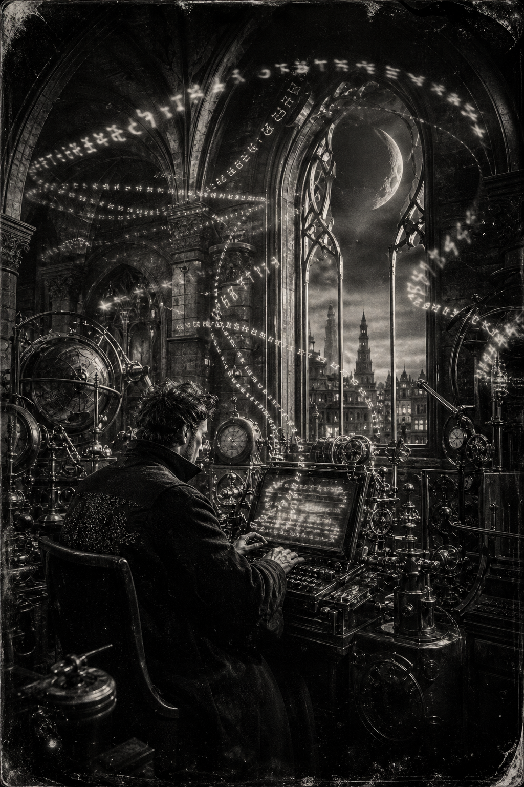

Morning Edition
6:00 AM CDTFinance & Markets
September's First Close Was Red
Tuesday did the honest compile. The S&P 500 closed at 7,631.47, down 0.71%. The Nasdaq finished at 26,099.77, off 1.03%. The Dow landed at 52,766.93, down 0.79%. Energy was the only sector that wanted the tape. Semis did not. Wednesday inherits the print, not the wish.
Source: The Business Times / Reuters and FRED, September 1–2, 2026Oil, Warsh, and a 68% Hike
West Texas is still holding the $90 handle this morning after Tuesday's spike. Markets now price a 68.2% chance of a 25-basis-point hike at the September meeting, up from 39.6% a week ago. Kevin Warsh's hawkish Friday plus fresh strikes is the cocktail. September is already doing what September does.
Source: The Business Times / Reuters, September 2, 2026Dell Raised the Server Ceiling
While the indexes sold the month's first day, Dell lifted its fiscal-year outlook by $25 billion and now expects $192 billion in revenue as server demand keeps climbing. One AI rack does not fix a red tape. It does remind the desks which compile is still shipping.
Source: Dow Jones via Morningstar, September 1, 2026World & US
The Pause Ended. The Strait Did Not.
Centcom said U.S. strikes on IRGC targets ran from noon Eastern Tuesday into early Wednesday, answering attempted attacks on Hormuz shipping and U.S. forces. Iran fired back at bases in Jordan, Kuwait, Iraq, and Bahrain. Jordan intercepted 13 ballistic missiles. The Iranian Red Crescent said four people, including a child, were killed when shrapnel hit a wedding home in Sirik. The U.S. said it never targets civilians. The waterway is still the price.
Source: BBC and Wikipedia Current Events, September 2, 2026Nepal Past a Thousand. The Tunnels Hold the Rest.
The Guardian's count is past 1,050 dead in Nepal, with more than 4,000 still missing and Chinese state media reporting 66 dead in Tibet. Prime Minister Balendra Shah said 11,000 people have been rescued. Search crews are still trying the hydropower tunnels. A British aid worker was mistakenly listed among 119 "rescued" names. Keep the names honest. Keep the tunnels on the board.
Source: The Guardian, September 1, 2026The House Bought Time. Kyiv Did Not Sleep.
The House voted Tuesday to extend government funding past the midterms, a short-term patch against a shutdown. Overnight, Zelenskyy said a Russian missile and drone assault killed 12 people in and around Kyiv, including an Indian citizen, the sixth straight day of strikes on the capital. Two closed loops: one in Congress, one in the air-raid siren.
Source: NPR and NDTV, September 1–2, 2026
The Wednesday Compile: the wizard does not wait for a greener tape. He types under the crescent, and lets the vaulted sky review the rest.
"Auspicious time is a merge window. Do not leave the branch uncommitted."- The Developer's Almanac
Sagittarius Horoscope
Justin, India Today says career is the ticket and the auspicious hour is a merge window: finish the plans with enthusiasm, skip stubbornness and haste. News18 says complete the financial plans on time, review every partnership PR before you sign, and keep the spend firewall up; lucky number 2, lucky color brown. Times of India says Jupiter and the Moon finally found the engine's timing—put the confidence into work, study, and a purposeful trip, not a louder tab. Your Rat-year ingenuity compounds on a clean Wednesday commit. Lucky hex: #6B4423. Lucky command: git rebase --continue.
Tech, AI, Space & Crypto
-
U.S. Spacewalk 99
Jessica Meir and ESA's Sophie Adenot finished a 6-hour, 49-minute EVA at 3:29 p.m. EDT. They installed a retroreflector on Harmony, swapped a truss camera, and swabbed the hull for microbes. Adenot's left arm snagged on a glove heater harness; unzipping the joint cleared it. Meir's seventh walk. The sky is still the rest of the repo.
Source: NASA, September 1, 2026 -
Gemini Closes the Coding Gap
Dow Jones says internal tests of Google's Gemini 3.8 Flash show progress in coding, the lane where the company has lagged Anthropic and OpenAI. A release is expected this week. OpenAI, in the same overnight file, will restrict its Astra model after rating it a "Critical" cyber risk. Faster autocomplete is not a merge. Review the PR.
Source: Dow Jones via Morningstar, September 1, 2026 -
Bitcoin Slips the Handle
Bitcoin traded this morning near $76,600 after Tuesday's $77,400 print and a $78,500 handle over the weekend. Spot is awake while the equity tape waits for the open. The cleaner signal is still Warsh plus oil: tighter September, quieter bets.
Source: Yahoo Finance, September 2, 2026 -
The Servers Keep Shipping
Dell's $25 billion outlook raise is the AI-infrastructure compile in one line: $192 billion for the year if the racks keep landing. SB Energy, majority-owned by SoftBank and backed by Nvidia, filed to IPO under SBE. The indexes sold September. The power bill did not.
Source: Dow Jones via Morningstar, September 1, 2026
Morning Compile
- Tuesday closed lower. Wednesday still compiles.
- Nepal's tunnels are still the count that matters.
- Gemini is closing the coding gap. Review the PR anyway.
- Finish the financial plan. Then rebase --continue.